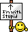

Wiki Markup
To edit a wiki page, click on the "Edit text of this page" link at the bottom of the page. This will take you to a page with a text box: in this text box is the text of the wiki page. Press "Save" to store your changes in the wiki. The "preview" button will reload the form page, with the output beneath it.
Wiki markup is essentially plain text. You do NOT need to put in soft line breaks: text wraps in the browser's edit box! There are a few simple control characters that are listed below. You can test these in the Sandbox. Guidelines On Technical Names has conventions on page names and formatting. /Converting from HTML.
Like HTML, Wiki markup is supposed to be logical, not physical. Don't worry about spacing (for example, double-spacing a list). Because of differing style sets, what you see on your page may differ from what others see.
> You can put quoted text in a neat box. > All Wiki formats apply there.
You can put quoted text in a neat box.
All Wiki formats apply there.
A horizontal dividing line: above and below. |
A horizontal dividing line: above ---- and below. |
A collapsable box (click to reveal the code): |
>> |
Links, URLs, Images |
|
Link to the Project FAQ. First letter of target is automatically capitalized. Spaces are converted into underscores. To create a new page: start with a link to it, then click on ?. Check out the Guidelines On Page Creation, that's where naming conventions currently live.) |
Link to the [[Project FAQ]]. |
Same target, different name: answers. Targets can only contain letters and spaces! |
Same target, different name: [[Project FAQ|answers]] |
[The weather in London]? is a page that doesn't exist yet. You can start it by clicking on the question mark. After creating a page, search for its title and make sure that everyone correctly links to it. |
[[The weather in London]] is a page that doesn't exist yet. |
| Redirect one article title to another by putting text like this in its first line. | #REDIRECT [[Project FAQ]] |
| External link: [Wikipedia] | External link: [http://www.wikipedia.org Wikipedia] |
Or just give the URL: http://www.wikipedia.com. Good idea since it makes a printout more useful. Links to .zip files get a fancy box around them and are best used in a paragraph of their own. Links to image files display the images inline. |
Or just give the URL: http://www.wikipedia.com. \\ Email addresses: mychaeel@beyondunreal.com |
Interlinks to other wikis:  Tarquin (see InterWiki for the list of prefixes) Tarquin (see InterWiki for the list of prefixes) |
Interlinks to other wikis: [[UseMod:Tarquin]] |
A picture: Upload images with the [Image Uploader]. It'll give you details about how to insert an image in a Wiki page after you have uploaded the image. Block and floating images with captions are also possible. |
A picture: @inline@wikilogo-small |
Text |
|
Character Formatting |
|
| italic, bold, bold and colored. Use also in formulas: F = m a. |
''italic'', '''bold''', ''''bold and colored''''. Use also in formulas: '''F''' = ''m'' '''a'''. |
Smileys |
Smileys :rolleyes: are displayed as images :-) |
| A typewriter font for technical terms. | A typewriter font for <tt>technical terms</tt>. |
Typewriter font, and no parsing: [[link]] :-) |
Typewriter font, and no parsing: <code>[[link]] :-)</code> |
| To escape characters, i.e., interpret them as characters, not formatting commands: < | === | To escape characters, i.e. interpret them as characters, not formatting commands: <nowiki> < | === </nowiki> |
| You can and insert new stuff. Useful for editing. |
You can <strike>strike out</strike> stuff and <u>insert new stuff</u> |
Smilies
This is the complete list of accepted smileys, from the Wookee:
:) |
:-) |
=) |
;) |
;-) |
:P |
:-P |
=P |
:D |
:-D |
=D |
:( |
:-( |
=( |
o_O |
O_o |
O_O |
:/ |
:-/ |
=/ |
 |
|
|
 |
|
 |
|
|
 |
|
|
 |
|
|
 |
|
|
 |
|
|
:rolleyes: |
:cheesy: |
:cool: |
:pissed: |
:shocked: |
:tup: |
:tdown: |
:stupid: |
:eek: |
:confused: |
:angry: |
:hmm: |
 |
 |
 |
 |
 |
 |
 |  |
 |
 |
|
Special Characters |
||||||||||||||||
| Two hyphens make a dash – like this | Two hyphens make a dash -- like this |
|||||||||||||||
| Three (or more) hyphens — make a longer dash | Three (or more) hyphens --- make a longer dash |
|||||||||||||||
| An arrow for menu commands: File → Save | An arrow for menu commands: File -> Save |
|||||||||||||||
Sign your name: The sequence Tarquin: Good point, well made. Use it at the end of a line to sign a comment like this: Good point, well made. —Tarquin |
|
|||||||||||||||
Umlauts and Accents |
||||||||||||||||
| À Á Â Ã Ä Å Æ Ç È É Ê Ë Ì Í Î Ï Ñ Ò Ó Ô Õ Ö Ø Ù Ú Û Ü ß à á â ã ä å æ ç è é ê ë ì í î ï ñ ò ó ô õ ö ø ù ú û ü ÿ |
À Á Â Ã Ä Å Æ Ç È É Ê Ë Ì Í Î Ï Ñ Ò Ó Ô Õ Ö Ø Ù Ú Û Ü ß à á â ã ä å æ ç è é ê ë ì í î ï ñ ò ó ô õ ö ø ù ú û ü ÿ |
|||||||||||||||
Punctuation |
||||||||||||||||
¿ ¡ « » § ¶ |
¿ ¡ « » § ¶ † ‡ • & |
|||||||||||||||
Evil Stuff |
||||||||||||||||
| ™ © ® ¢ € ¥ £ ¤ (Always use the code, these characters can mess up fonts on certain browsers.) |
™ © ® ¢ € ¥ £ ¤ |
|||||||||||||||
Subscript and Superscript |
||||||||||||||||
| x2 | x<sub>2</sub> |
|||||||||||||||
| x2 | x<sup>2</sup> |
|||||||||||||||
Greek Characters |
||||||||||||||||
| α β γ δ ε ζ η θ ι κ λ μ ν ξ ο π ρ σ ς τ υ φ χ ψ ω |
α β γ δ ε ζ η θ ι κ λ μ ν ξ ο π ρ σ ς τ υ φ χ ψ ω |
|||||||||||||||
| Α Β Γ Δ Ε Ζ Η Θ Ι Κ Λ Μ Ν Ξ Ο Π Ρ Σ Τ Υ Φ Χ Ψ Ω |
Α Β Γ Δ Ε Ζ Η Θ Ι Κ Λ Μ Ν Ξ Ο Π Ρ Σ Τ Υ Φ Χ Ψ Ω |
|||||||||||||||
Math Characters |
||||||||||||||||
| ∫ ∑ ∏ √ ± ∞ ≈ ∝ ≡ ≠ ≤ ≥ → × · ÷ ∂ ′ ″ ∇ ‰ ° ⋅ ∴ ℵ ø ∈ ∋ ∩ ∪ ⊂ ⊃ ⊆ ⊇ ¬ ∧ ∨ ∃ ∀ ⇒ ⇔ (Note: not all of these work in all browsers and on all systems) |
∫ ∑ ∏ √ ± ∞ ≈ ∝ ≡ ≠ ≤ ≥ → × · ÷ ∂ ′ ″ ∇ ‰ ° ⋅ ∴ ℵ ø ∈ ∋ ∩ ∪ ⊂ ⊃ ⊆ ⊇ ¬ ∧ ∨ ∃ ∀ ⇒ ⇔ |
|||||||||||||||
Hard Spaces |
||||||||||||||||
| x2 ≥ 0 Otherwise would look like this: x2≥0 This is useful in formulas. |
x<sup>2</sup> ≥ 0 |
|||||||||||||||
ASCII Art Integrals |
||||||||||||||||
Start every line with a blank. ∞ -x2 ∫ e dx = √π -∞ |
∞ -x<sup>2</sup> ∫ e dx = √π -&infin |
|||||||||||||||
Tables |
||||||||||||||||
|
| bAlwaysRelevant | Notoriously overconfident. | bHidden | Lacks self assurance. |
|||||||||||||||
|
|||^ <wiki>=== A complex table ===</wiki> | |^ '''First''' |^ '''Second''' |^ '''Third''' | | upper left | upper middle | right side | |> right aligned |^ centered |< left aligned | |||^ bottom row spans three columns | |
|||||||||||||||
| To use sophisticated paragraph markup (like headings or lists) in a table cell, enclose it in <wiki>...</wiki>. The amount of whitespace between table cells is irrelevant for the resulting formatting. | ||||||||||||||||
See also:
- Wookee – More information about the formatter.
- MetaTopics – Other topics about the project.
Parts of the markup table are borrowed from [Wikipedia].